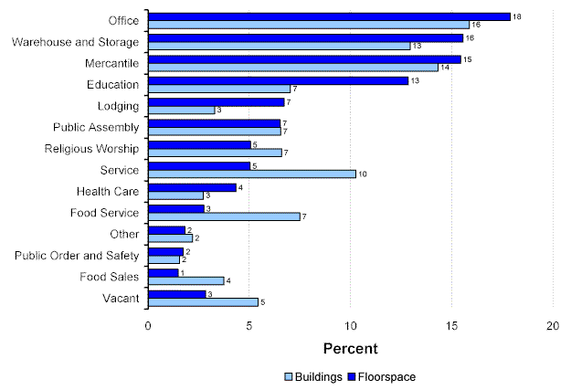

Percentage of Floorspace and Buildings by Principal Building Activity, 1999

Commercial Buildings Energy Consumption Survey
Specific questions may be directed to:
Alan Swenson
alan.swenson@eia.doe.gov
Release date: May 21, 2002
http://www.eia.gov/consumption/commercial/data/archive/cbecs/char99/pba_pct.html
If you are having any technical problems with this site, please contact the EIA webmaster at wmaster@eia.doe.gov.